样品与检测
同步获取水温、溶解氧、氧化还原电位、盐度等理化参数；完成 DOC、三维荧光与 FT-ICR MS 测试。
集成河口—河网、城市河流与污水终端分子指纹库，支持光学快速分类、口门来源解析与污染物名录比对。
选择模块进入。可从数据库构建、三库特征、光学检测、口门溯源到名录与样品比对逐步使用。
完成野外采样、DOC / EEM / FT-ICR MS 检测与质控归档，形成可检索、可比对的元数据库。
同步获取水温、溶解氧、氧化还原电位、盐度等理化参数；完成 DOC、三维荧光与 FT-ICR MS 测试。
点位与批次、水体环境背景、荧光指数与 PARAFAC 组分、分子式及 H/C、O/C、AI_mod、DBE、CRAM 等参数。
按场景划分为河口库、城市河流子库、污水终端库；终端库按出现频率建立分级约束。
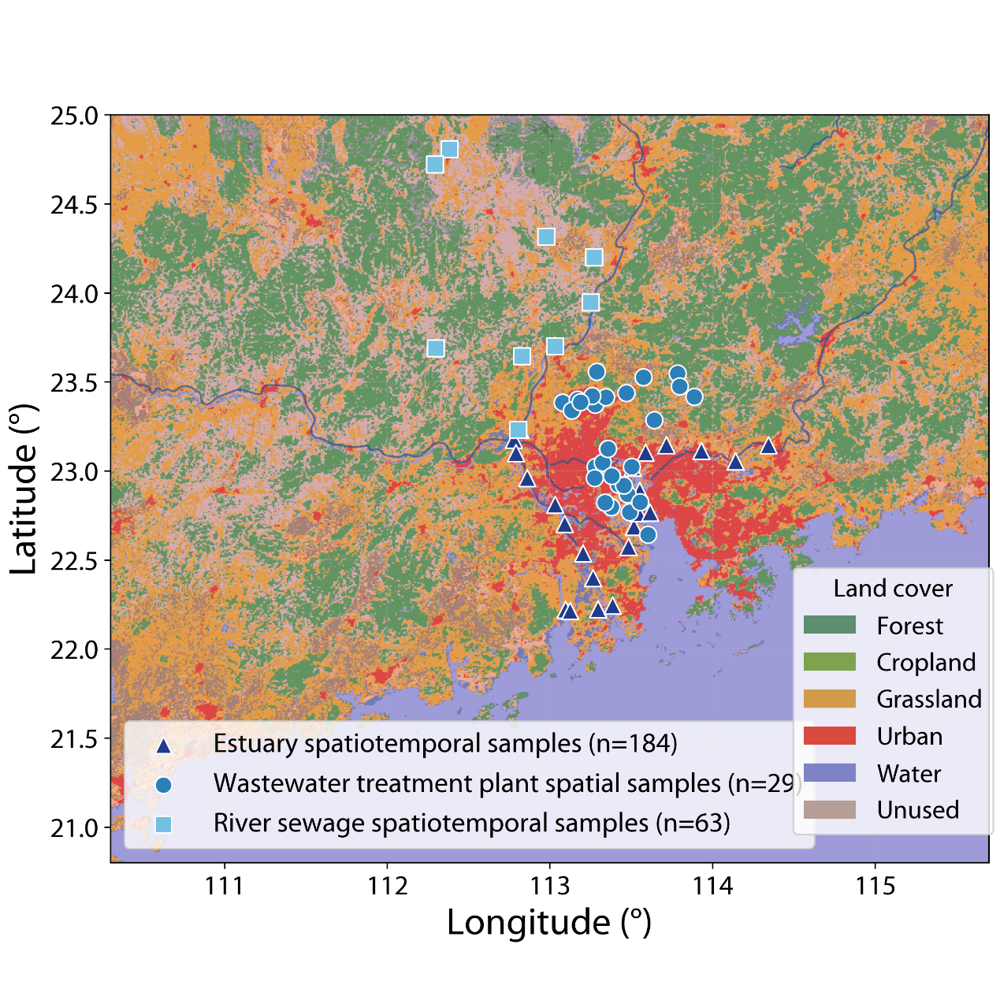
请选择子库查看特征说明与平台调用方式。
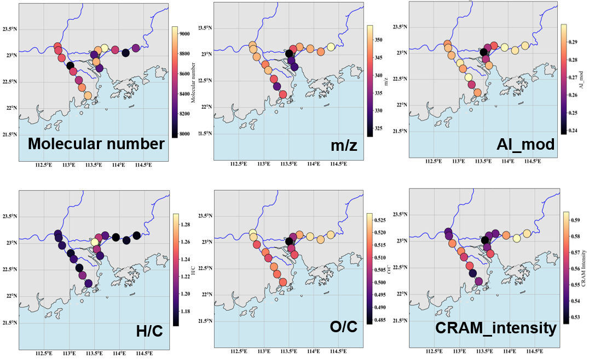
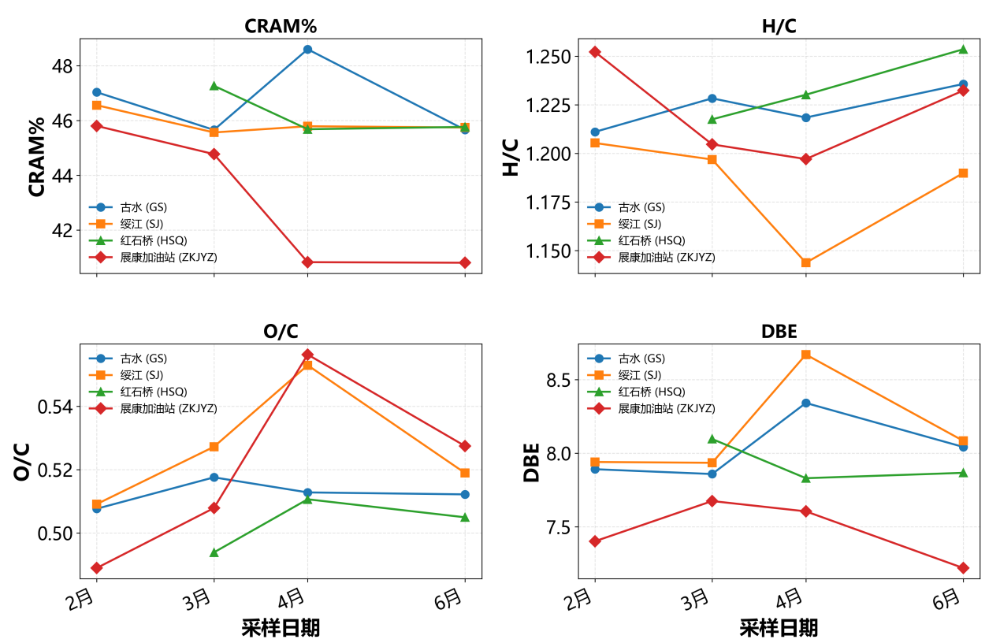
刻画珠江口河系背景与口门混合过程中的荧光与分子分异。
在 FEAST 中作为西江、东江、北江河系端元的指纹来源。
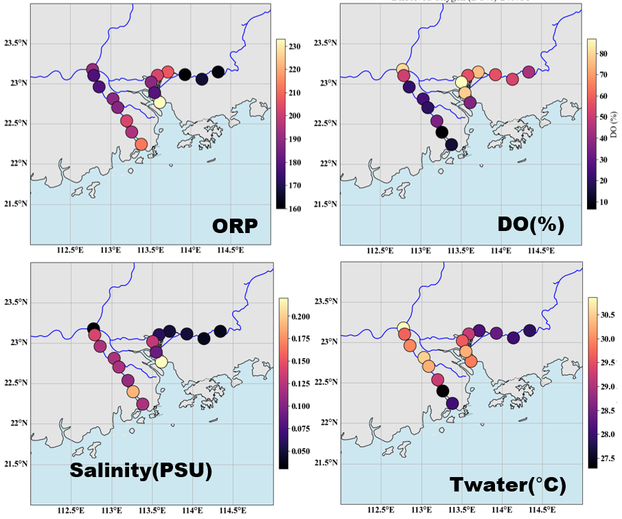
识别城镇河网背景河段与高影响河段，补充时间变化信息。
在口门溯源中作为城镇输移端元；横门、鸡啼门、洪奇沥等口门城镇信号相对抬升。
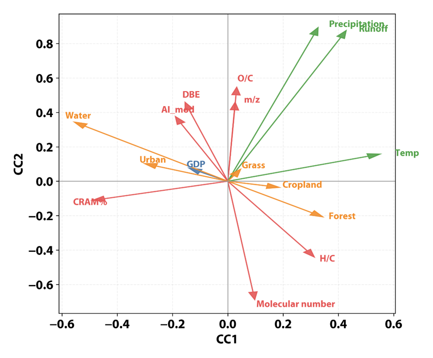
表征污水处理厂终端出水点源指纹，并支持名录筛查。
作为点源端元参与口门解析，并支撑名录比对与样品分子式比对。
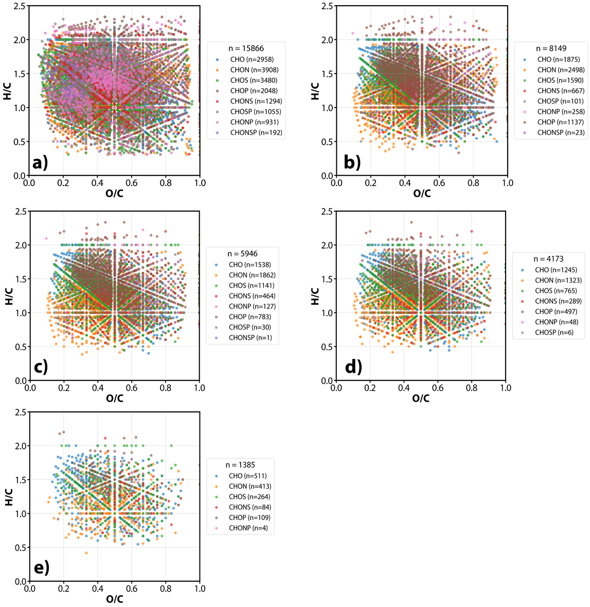
以吸收光谱与三维荧光实现水体类型快速归类，异常样品再进入分子指纹确认。方法验证共使用 233 个样品。
吸收光谱与三维荧光（EEM）表征 CDOM / FDOM；随机森林基于完整 EEM 信息识别水体类型，并定位关键荧光判别区域。
香港近岸复杂水循环系统共 233 个样品，涵盖雨水、雨洪径流、河水、海水、海滩地下水、沉积物孔隙水及污水等七类水体。
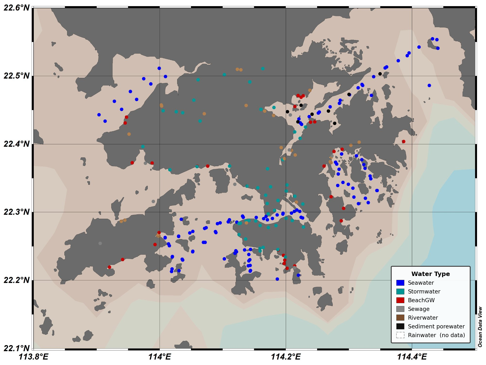
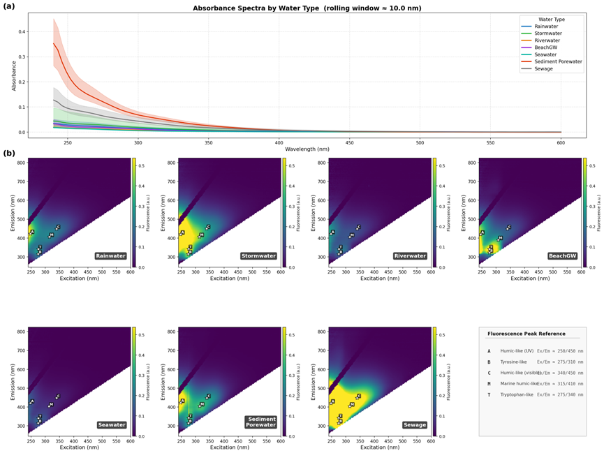
汇为珠江口主要口门；源为西江、东江、北江、城市河流与污水厂。基于约 2.8 万分子式估算各端元组成贡献。
虎门偏东江，污水厂贡献相对更高；横门城市河流抬升；虎跳门偏西江。
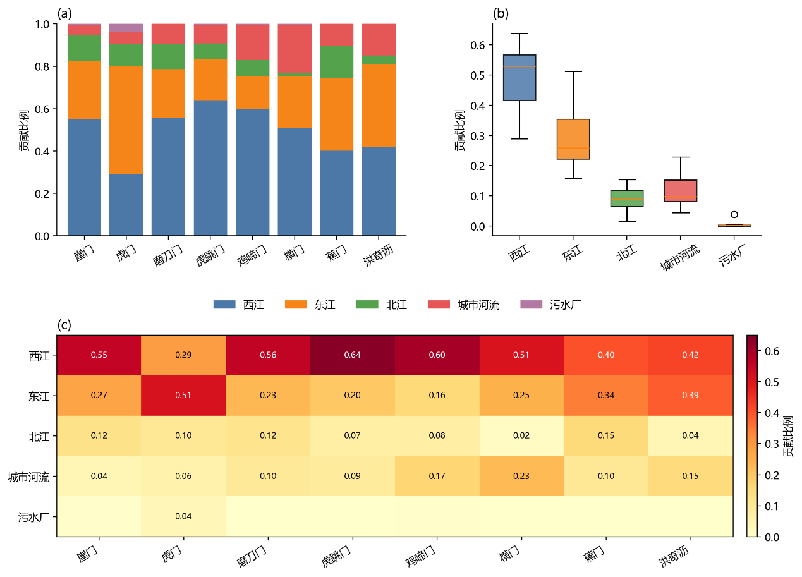
本页分两块：上半为指纹库本身（分级约束与元素组成）；下半为社会经济驱动结果。污染物名录检索与检出比对见第 06 模块。
按出现频率建立分级约束，刻画污水终端共性分子指纹。
说明宏观发展水平如何影响终端出水有机质组成。逐条污染物名录检索见第 06 模块。
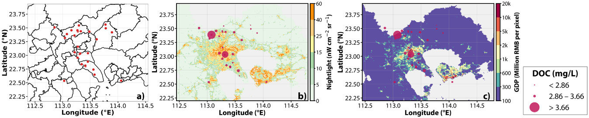
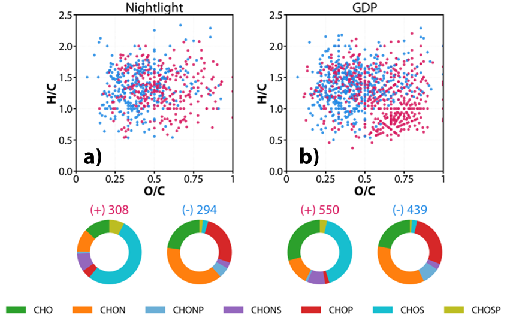
工业化学品、PPCPs 等类别的逐条名录检索与样品检出比对，请进入「名录比对与样品比对」模块。
名录检索与样品分子式命中核对。
指纹库与权威污染物名录比对后的映射检索。
| 分子式 | 污染物名称 | InChIKey | 建议类别 | 最终类别 |
|---|
上传 CSV 或粘贴分子式清单，检查是否命中污水终端最严格核心指纹。
| 输入分子式 | 归一键 | 是否命中 | 库内类别 | 定位 |
|---|---|---|---|---|
| 上传或粘贴分子式后查看结果 | ||||